Airship Crash
Introduction
Following the Airship Assault with Captain Ferlock, the airship loses control and crashes onto an unidentified island. You can continue the aftermath instance with an expedition team which makes their way to the crash site for observation. In this instance your purpose is to help them explore the island and investigate monsters that inhabits the place. Be careful, these monsters are pretty tough due to the powers of the Ymir Stone.
Unlike regular instance, this one can be considered as a dungeon on NovaRO.
The purpose of this instance is to obtain  Ymir Ore (from killing monsters inside the cave) and 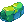 Ymir Fragment (from turning in quests).
Ymir Ores can be used to reform Thanatos weapons into Thanos weapons-AD.
Ymir Fragments can be exchanged either for spawning one of the 4 variants of the instance MVP, or for Unknown Stat Boots, enchantment catalyst and a card album containing only cards from monsters from this instance (including the MVP boss cards!).
Ymir Ore (from killing monsters inside the cave) and 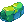 Ymir Fragment (from turning in quests).
Ymir Ores can be used to reform Thanatos weapons into Thanos weapons-AD.
Ymir Fragments can be exchanged either for spawning one of the 4 variants of the instance MVP, or for Unknown Stat Boots, enchantment catalyst and a card album containing only cards from monsters from this instance (including the MVP boss cards!).
Access
To start the instance, talk to Warper -> Heroes' Trails -> Airship Assault and talk to Dr. Dry Circle Strong at .
Upon generating and entering the instance you will arrive in a map similar to Mjolnir Field. Talk to nearby Surprised Resident NPC.
Then make your way to the instance cave at coordinates 277 253 (navigation doesn't work on this map for some reason on NovaRO).

After entering the cave, you will notice several NPC as seen on this image, their function is as shown below:

1) Professor Daeguto NPC
As shown in the picture above, talk to this NPC first and select "Register the party.".
Be careful, once you finish the dialog, monsters in the cave will start spawning even in the area with all the NPCs!
This NPC will also turn in your quests and reward you with Ymir Fragments.
2) Graduate Student NPC (Monster Killing Quests)
Talk to this after talking to the Professor. Here you will be getting your quests.
3) "Ghost" Graduate Student NPC
This NPC provides information about the MVP lurking in the instance.
To summon the MVP, bring 55x Ymir Fragment.
Then either walk to the top middle part of the map (that looks like a head) or talk to the mobile device to teleport right to the MVP spawn location.
4) "Rope" Graduate Student NPC
This NPC marks up your minimap with locations of all mobile devices, which can teleport you to another random mobile device or back to the base area with all the NPCs.
Quests
Here's the list of quests obtainable from the Graduate Student NPC as described above.
You will be able to receive the first quest only after entering the instance and unlock further quests when turning in completed quests.
| Quest | Reward |
|---|---|
| Kill 100 Monsters | 1x Ymir Fragment Unlocks Kill 200 Monster Quest |
| Kill 200 Monsters | 3x Ymir Fragment Unlocks Kill 350 Monster Quest |
| Kill 350 Monsters | 10x Ymir Fragment |
Item Exchange NPC
There are items you can obtain by exchanging Ymir Fragment to the Pizza Sword String NPC just outside the instance at . The item exchange list is as follow :
| Item | Cost |
|---|---|
| 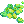 Ymir Beads | 150 000 zeny 17x Ymir Fragment |
| Ymir Beads | 150 000 zeny 20x Ymir Ore
|
| Unknown LUK Boots [1] | 185x Ymir Fragment |
| 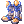 Unknown AGI Boots [1] | 185x Ymir Fragment |
| 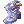 Unknown INT Boots [1] | 185x Ymir Fragment |
 Unknown VIT Boots [1] Unknown VIT Boots [1] |
185x Ymir Fragment |
 Unknown DEX Boots [1] Unknown DEX Boots [1] |
185x Ymir Fragment |
 Unknown STR Boots [1] Unknown STR Boots [1] |
185x Ymir Fragment |
| Tainted Card Album | 2500x Ymir Fragment |
| 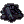 Gray Abrasive (Melee) (used to enchant Thanos-AD weapons) | 350 000 zeny 3x Ymir Fragment 35x Ymir Ore
|
| Gray Abrasive (Magic) (used to enchant Thanos-AD weapons) | 350 000 zeny 3x Ymir Fragment 35x Ymir Ore
|
| Gray Abrasive (Ranged) (used to enchant Thanos-AD weapons) | 350 000 zeny 3x Ymir Fragment 35x Ymir Ore
|
Monsters
Due to the instance basic mechanic, the HP of the monsters listed below will got exponentially increased based on the amount of members in your party, up to 10x HP increase, so be prepared.
| Image | Name | Level | HP | Size / Race / Element |
|---|---|---|---|---|
| 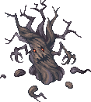 | Rotten Tree | 236 | 17,421,722 | Large / Plant / Dark 4 |
| 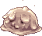 | Melted Poring | 230 | 13,295,524 | Medium / Plant / Poison 3 |
| 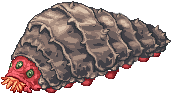 | Grave Worm | 238 | 18,797,121 | Large / Insect / Poison 4 |
| 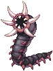 | Brain Sucker | 235 | 16,734,022 | Medium / Insect / Dark 2 |
| 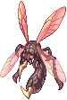 | Mosquilo | 233 | 15,358,623 | Medium / Insect / Wind 3 |
| 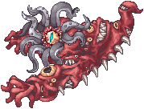 | Unidentified Creature or Unknown Creature
|
240 | 1,843,970,467 | Large / Formless / Neutral 3 |
Cards
The following cards can be obtained also from the Tainted Card Album:
| Card | Type | Description |
|---|---|---|
 Rotten Tree Card Rotten Tree Card |
Armor | HP Recovery + 100%
Increase all damage dealt to insect monsters by 10%. |
 Grave Worm Card Grave Worm Card |
Weapon | When using Rod or Two-Handed Staff, bypass 10% of magic defense of all races except players.
Additional 2% bypass magic defense per 4 refine. Increase physical damage received by 2% per 4 refine. |
 Brain Sucker Card Brain Sucker Card |
Weapon | MHP - 15%
Drain 2 SP per attack. Adds a chance of restoring 20% of damage as HP when performing a physical attack. |
 Mosquilo Card Mosquilo Card |
Accessory | Variable Casting Time - 7%
Attack Speed - 3% |
 Melted Poring Card Melted Poring Card |
Headgear | MHP + 10%
If VIT is 100 or greater, Earth and Poison resistance + 1% If VIT is 130, Earth and Poison resistance + 3% |
 Unknown Creature Card Unknown Creature Card |
Accessory (Right) | Increase Poison and Dark magic damage by 30%
Holy Resistance - 10% |
| 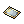 Unidentified Creature card | Weapon | When using Two-Handed Sword or Two-Handed Axe, melee physical damage + 10% and ASPD + 1.
Additional 1% melee physical damage per 2 refine. |
Unknown Stat Boots
Here you can find information about the new boots gotten from this Instance and its enchantment. These boots can be obtained via the Item Exchange NPC or by killing the instance MVP.
| Image | Name | Description |
|---|---|---|
| 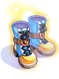 | Unknown Luk Boots [1] | Atk + 15 per 2 refine rate. MaxHP + 100 and MaxSP + 8 per 3 refine rate. |
| Unknown Agi Boots [1] | Atk + 15 per 2 refine rate. MaxHP + 120 and MaxSP + 8 per 3 refine rate. | |
| 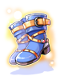 | Unknown Int Boots [1] | Matk + 15 and increases heal effectiveness by 2% per 2 refine rate. MaxHP + 80 and MaxSP + 20 per 3 refine rate. |
| 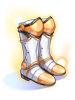 | Unknown Vit Boots [1]
|
Atk + 10 and Matk + 10 per 2 refine rate. MaxHP + 150 and MaxSP + 15 per 3 refine rate. |
| Unknown Dex Boots [1]
|
Atk + 15 per 2 refine rate. MaxHP + 110 and MaxSP + 3 per 3 refine rate. | |
| Unknown Str Boots [1]
|
Atk + 15 per 2 refine rate. MaxHP + 120 and MaxSP + 8 per 3 refine rate. |
To enchant your boots, use Ymir Beads. Every use will add 2 enchants to the boots and there's no chance of failing or breaking the item. You can re-roll your enchantments as long you have the materials.
| Line Option | Possible Enchants |
|---|---|
| 1 | MHP + 1% ~ 10% |
| MSP + 1% ~ 10% | |
| 2 | HP Recovery + 25% ~ 50% |
| SP Recovery + 25% ~ 50% | |
| MHP + 50 ~ 1000 | |
| MSP + 10 ~ 300 | |
| Attack Speed + 1% ~ 7% | |
| Variable Cast Time - 1% ~ 10% |